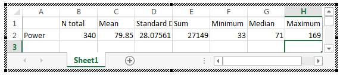
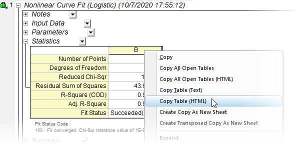

FAQ-815 Wie kopiere ich eine Berichtsblatttabelle und füge sie in Word, Excel oder PowerPoint ein?
Copy-table
Letztes Update: 20.03.2023
Viele von Origins Hilfsmitteln für Analyse und Statistik erstellen eine Ausgabe in Form eines Analyseberichtsblatts. Diese FAQ zeigt Ihnen, wie Sie die Daten in Office-Anwendungen einfügen.
PowerPoint oder Excel, alle Origin-Versionen
- Um den Textinhalt einer Berichtstabelle zu kopieren, (a) klicken Sie auf die Schaltfläche des Auswahlmenüs auf dem entsprechenden Tabellenknoten oder (b) klicken Sie mit der rechten Maustaste in die Tabelle und wählen dann Tabelle kopieren (Text) (in älteren Versionen nur Tabelle kopieren).
-

- Wechseln Sie zu PowerPoint und zur Registerkarte Einfügen, erweitern Sie das Menü Tabelle und wählen Sie Excel-Tabelle einfügen. Klicken Sie in die Zelle A1 in dem eingefügten Excel-Blatt und verwenden Sie Strg + V, um die Origin-Tabelle einzufügen. Ziehen Sie an den Auswahlelementen der eingefügten Tabelle, um alle Ergebnisse zu zeigen.
-
- 
Um entsprechend die Tabelle in Excel einzufügen, klicken Sie einfach auf eine Zelle in dem Tabellenblatt und drücken Sie die Tasten Strg + V. Die Funktion Tabelle kopieren (Text) unterstützt jedoch nicht das Kopieren von Fußnoten, die bei einigen Berichtstabellen eingebunden sind. Informationen zum Einschließen von Fußnoten finden Sie unter Word und andere Office-Anwendungen, Origin 2021 und höher.
Word und andere Office-Anwendungen, Origin 2021 und höher
Seit Origin 2021 können Sie Berichtstabellen und Fußnoten als HTML kopieren und dann in Office-Anwendungen einfügen.
- Um eine Berichtstabelle zu kopieren, (a) klicken Sie auf die Schaltfläche des Auswahlmenüs auf dem entsprechenden Tabellenknoten oder (b) klicken Sie mit der rechten Maustaste in die Tabelle und wählen dann Tabelle kopieren (HTML).
-
- 
- Um mehrere Tabellen zu kopieren, minimieren Sie diejenigen, die Sie nicht kopieren möchten, klicken Sie dann mit der rechten Maustaste auf die Seite des Berichtsblatts und wählen Sie Alle offenen Tabellen kopieren (HTML).
- Wechseln Sie zu Ihrer Office-Anwendung (z. B. MS Word) und fügen Sie mit der Option Ursprüngliche Formatierung beibehalten ein. Der gleiche Vorgang funktioniert mit Excel bzw. PowerPoint. Die besten Ergebnisse in PowerPoint erreichen Sie, wenn Sie eine Excel-Tabelle zuerst, wie oben beschrieben, einfügen.
 |
Alle offenen Tabellen kopieren (HTML) kann den Systemressourcen viel abverlangen. Sollten Ihre Ergebnisse nicht gut sein, versuchen Sie erneut, indem Sie alle nicht gebrauchten Anwendungen schließen. Wenn dies fehlschlägt, versuchen Sie es mit einem Neustart Ihres Computers.
|
|
Seit Origin 2023b können Sie transponierte Berichtstabellen kopieren und direkt über das Kontextmenü Transponierte Tabelle (Text) kopieren in die Zwischenablage einfügen.
|
Schlüsselwörter:Bericht, kopieren, Tabelle, HTML, EMF, PowerPoint, Word, Excel